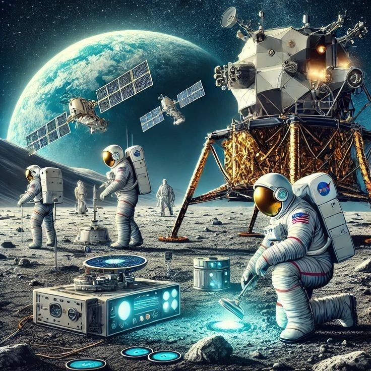
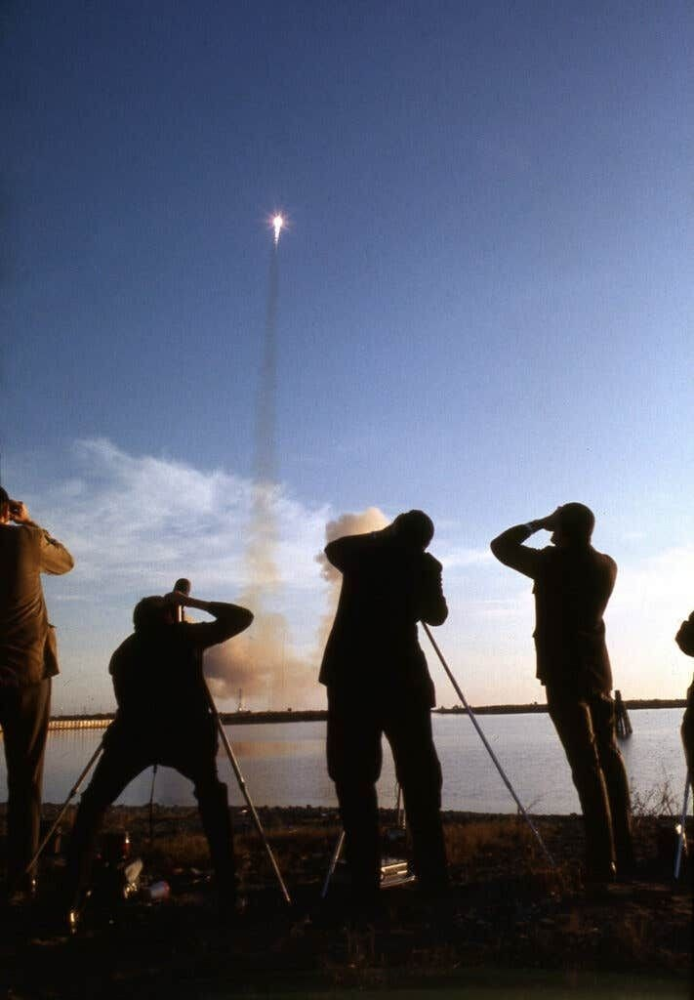
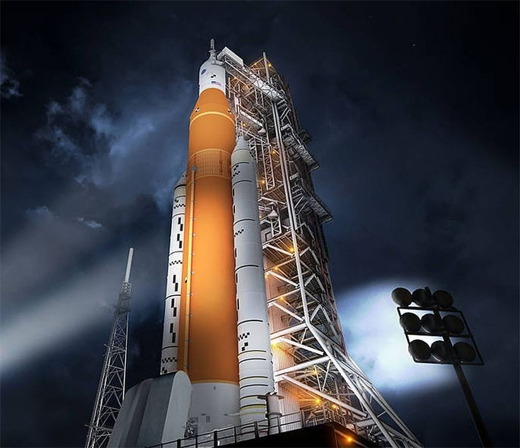

Human and Robotic Exploration of the Moon
Early Missions
During the 1950s and 1960s, both the USA and USSR launched dozens of missions to study and reach the Moon.

Apollo Program
NASA's Apollo missions were historic. Between 1969 and 1972, six crewed missions successfully landed on the Moon.

Recent Advancements
- China's Chang’e program has landed rovers on the Moon.
- India's Chandrayaan-3 landed near the lunar south pole in 2023.
- NASA's Artemis program is planning to return humans to the Moon by 2026.
